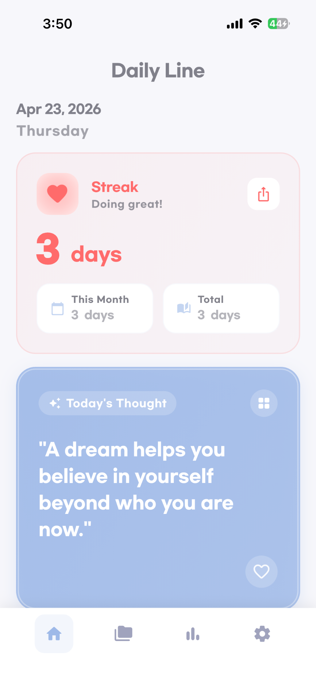
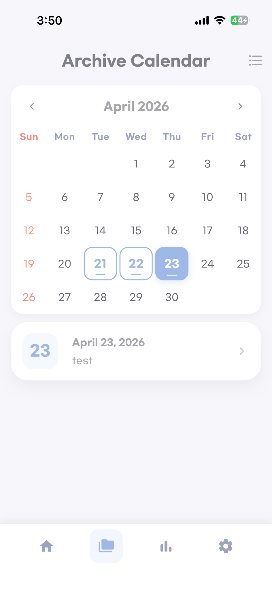
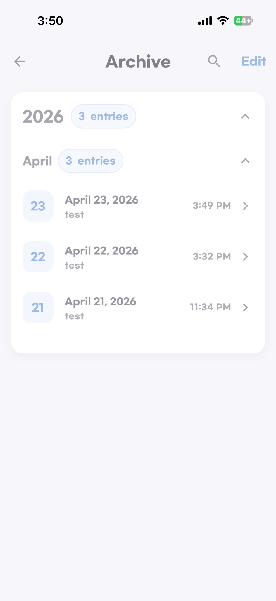
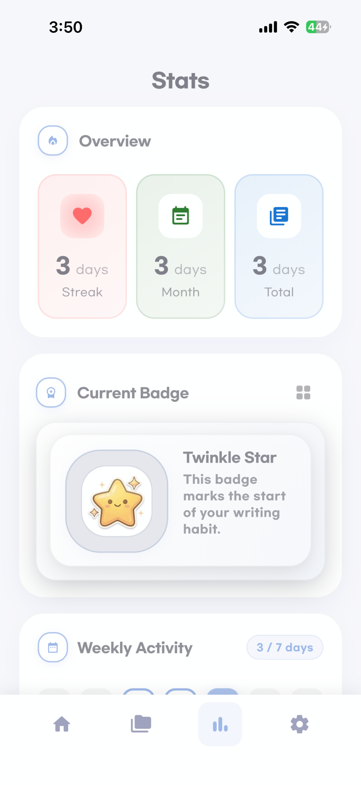
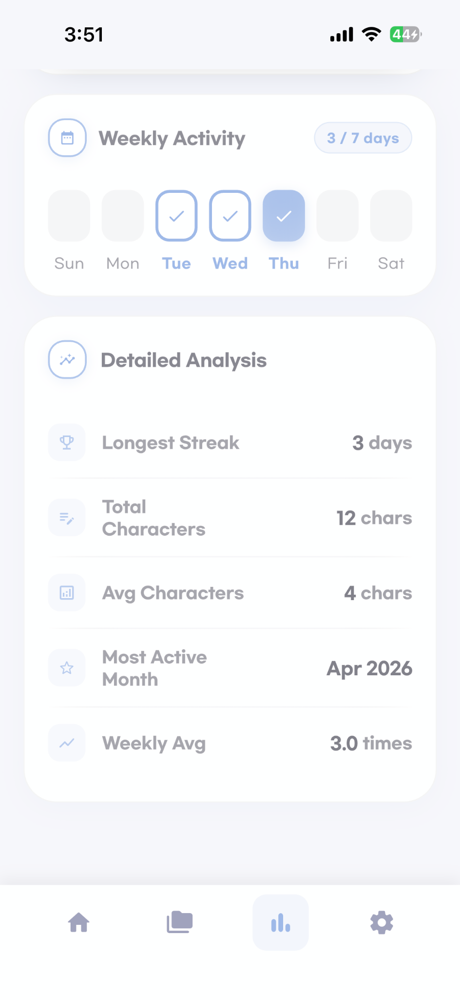
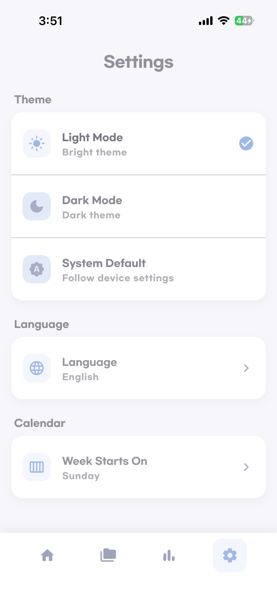
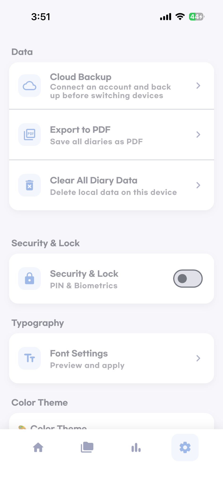
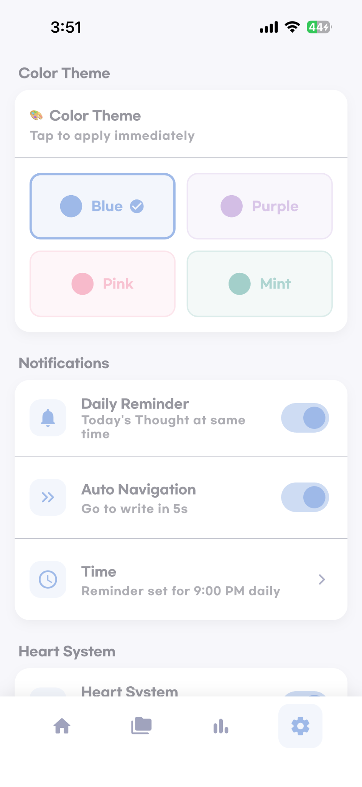
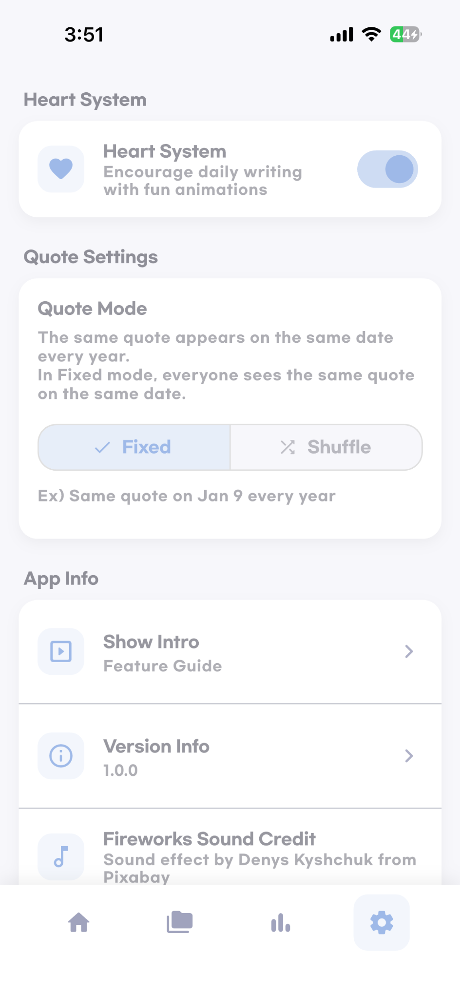
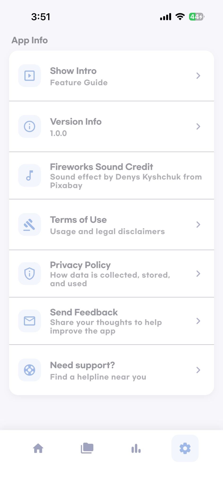

Home and Today’s Thought
The home screen highlights the daily quote and current streak in a soft, friendly layout.
Daily Line is a warm daily journaling app designed to help users reflect, record short thoughts, build writing habits, and revisit personal moments through archive and statistics features.

A simple, calm, and customizable diary experience built for daily use.
Daily Line lowers the pressure of journaling and helps users keep a steady writing habit with short entries and a warm interface.
Users can review archive history, streaks, weekly activity, totals, and detailed analysis to understand their writing pattern.
The app includes reminders, themes, font settings, language settings, backup, export, and lock features for a more personal experience.
App introduction is provided below in Korean, English, Japanese, neutral Spanish, and Brazilian Portuguese.
Daily Line은 매일 글을 쓰는 습관을 자연스럽게 만들어주는 심플하고 감성적인 다이어리 앱입니다. 오늘의 생각, 기록 보관, 통계, 알림, 테마 변경, 백업, PDF 내보내기 기능을 통해 사용자가 자신의 하루를 편안하게 기록할 수 있도록 돕습니다.
Daily Line is a simple and thoughtful diary app that helps users build a daily writing habit. It includes today’s thought, archive, statistics, reminders, themes, backup, and PDF export so users can keep their daily moments in one calm place.
Daily Lineは、毎日の書く習慣をやさしく支えるシンプルな日記アプリです。今日のメッセージ、アーカイブ、統計、通知、テーマ変更、バックアップ、PDF書き出し機能を通して、日々の記録を心地よく残せます。
Daily Line es una aplicación de diario simple y agradable que ayuda a crear el hábito de escribir cada día. Incluye pensamiento del día, archivo, estadísticas, recordatorios, temas, copia de seguridad y exportación en PDF para guardar los momentos diarios de forma cómoda y clara.
Daily Line é um aplicativo de diário simples e acolhedor que ajuda você a criar o hábito de escrever todos os dias. Ele oferece pensamento do dia, arquivo, estatísticas, lembretes, temas, backup e exportação em PDF para guardar seus momentos com tranquilidade.
Each section below pairs a feature explanation with real in-app screenshots.
The home screen highlights the daily quote and current streak in a soft, friendly layout.
Users can review saved entries by date with a simple monthly archive calendar.

Entries can also be browsed as a chronological list grouped by year and month.

The statistics dashboard shows streak, monthly activity, totals, badges, and weekly activity at a glance.

Users can see longest streak, total characters, average characters, most active month, and weekly average.

Light mode, dark mode, system mode, language, and calendar settings are available.

Cloud backup, PDF export, data deletion, lock, and font settings help users manage their content safely.

Daily reminders, automatic navigation, reminder time, and color theme settings support daily habit building.

Users can choose fixed or shuffle quote mode and review basic app settings on the same screen flow.

Version information, legal links, feedback, and support access are clearly exposed inside the app.

The app focuses on consistency, reflection, and user-controlled customization.
Daily Line offers a short quote experience with fixed and shuffle modes to support a gentle writing routine.
Users can browse entries in both calendar and list formats to revisit earlier writing quickly.
Overview cards, badge progress, weekly activity, and detailed analysis help users understand their journaling habit.
Daily reminders and optional automatic navigation make it easier to return to the app consistently.
Theme, color, font, language, and calendar settings let users shape the app around their own preference.
Cloud backup, PDF export, and security lock options help users keep their diary content controlled and portable.
Privacy Policy and Terms of Use are provided in Korean and English only.
For support, legal inquiries, or Apple review verification, please use the contact below.